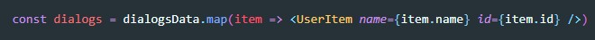

Если внутрь JSX кода поместить массив, то React распарсит этот массив и каждый элемент массива будет отображен как строка.
Предположим что у нас есть копонента, которая возвращает список (дел, сообщений или еще чего-нибудь). Так же у нас есть массив, каждый элемент которого - это объект описывающий элемент списка. Что бы отобразить список элементов на странице нам нужно привести каждый элемент массива к виду разметки JSX нашей компоненты. Для этого мы будем использовать метод map
У нас есть массив объектов
Так же у нас есть компонента которая возвращает список:
Что бы вывести на экран список диалогов из наших данных (из массива) мы должны создать новый массив, который заполним применив к уже имеющемуся массиву метод map
Теперь, все что нам осталось, это поместить внутрь нашей JSX разметки переменную с нашим новым массивом. ВАЖНО т.к. мы обращаемся к переменной внутри JSX кода, то ОБЯЗАТЕЛЬНО нужно использовать фигурные скобки:

Для того что бы в консоли не вылезала ошибка:
Нужно в каждый item (в который записывается строчка отрисовки компоненты) нужно добавлять атрибут key и значение этого атрибута должно быть уникальным. Лучше всего в этот атрибут записывать id записи